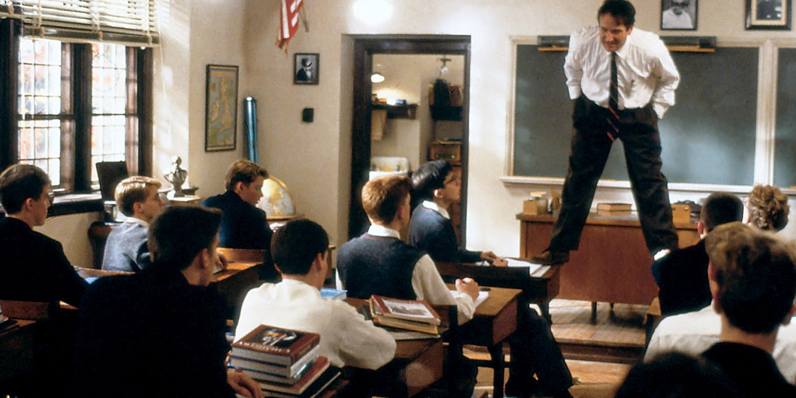

Phrases
"I stand upon my desk to remind myself that we must constantly look at things in a different way"
N.H. Kleinbaum quote
"I went to the woods because I wished to live deliberately, to front only the essential facts of life, and see if I could not learn what it had to teach, and not, when I came to die, discover that I had not lived."
Actors
- Robin Williams
- Robert Sean Leonard
- Ethan Hawke
- Josh Charles